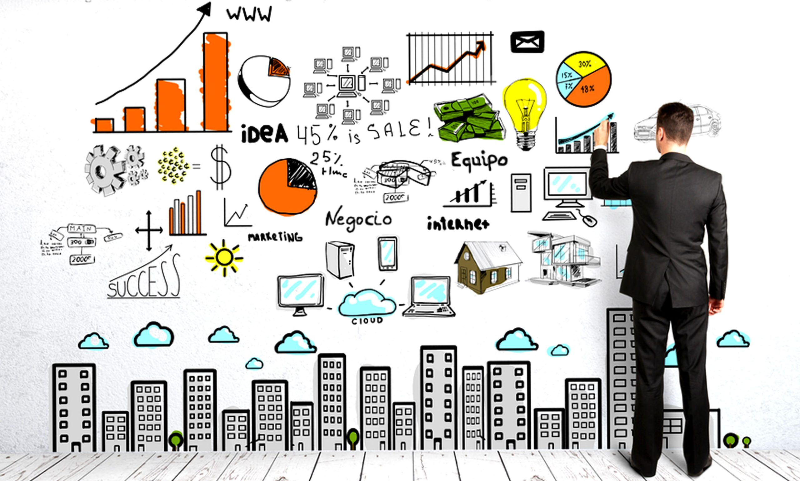

Entendemos que la innovación se basa en la introducción de nuevas ideas, métodos o estrategias, con la finalidad de hacer más fácil la vida de las personas. Esto se traduce en modelos de negocio, servicios o procesos nunca aplicados con anterioridad. Por ejemplo, el desarrollo de tecnologías destinadas a reducir la tasa de consumo de electricidad se puede considerar un tipo de innovación. La innovación necesita de la creatividad. Esto conduce a nuevos mercados, conocimientos, transformaciones tecnológicas, reformulaciones económicas, etc. En definitiva, se cambia el status quo y se permite a las organizaciones seguir siendo competitivas en un entorno cada vez más cambiante.
Cuando el agua de las precipitaciones se filtra a través de la corteza terrestre, forma masas de agua (corrientes profundas y acuíferos) que, al entrar en contacto con el calor del subsuelo, dan lugar a una reserva geotérmica formada por agua y vapor a elevadas temperaturas. En ocasiones el calor existe, pero no el acuífero, por lo que para explotar la energía geotérmica hay que inyectar algún fluido que permita extraerla (normalmente agua). Las centrales geotérmicas extraen la energía térmica en forma de agua caliente y vapor. En la superficie se aprovecha esa energía bien directamente separando el vapor de la mezcla con un separador ciclónico o bien indirectamente utilizando un intercambiador de calor. El agua sobrante se reinyecta de nuevo en el subsuelo para reiniciar el ciclo y el vapor obtenido se envía a una turbina para generar electricidad.
La principal diferencia entre emprendimiento e innovación es que la innovación implica el desarrollo de algo nuevo. Esto puede ser un modelo de negocio, un producto, una idea o un servicio. Por otro lado, el emprendimiento supone convertir una idea concreta en una oportunidad de negocio. Analizamos las diferencias y cómo se complementan.
| idea | Descripción |
|---|---|
| Reducción de riesgos | Convertir una idea abstracta en una oportunidad de negocio supone enfrentar riesgos. Por el contrario, la innovación se basa en la experimentación y la reducción sistemática de esos riesgos. Así pues, unir emprendimiento e innovación, introduciendo el elemento de la innovación en el proceso de emprendimiento, es un motor que garantiza procesos mucho más fiables y con garantías |
| Mayor durabilidad | El emprendimiento busca que los proyectos permanezcan en el tiempo. La innovación con un enfoque emprendedor ayuda a potenciar la durabilidad, a través de propuestas disruptivas y enfocadas en el largo plazo. |
| Máximo Interés | Los emprendedores fracasan, reconsideran y trabajan duro para que la empresa sea más exitosa. Por el contrario, los innovadores suelen perder interés después de la etapa de “concepción de la idea”. Cuando el emprendimiento va unido a la innovación, no se pierde el interés y se busca profundizar en las ideas propuestas. |
| Habilidades integrales | Los empresarios necesitan habilidades orientadas a la planificación, liderazgo, gestión y toma de decisiones; asumen riesgos, trabajan duro y están comprometidos. Los innovadores tienen pasión por la investigación y experimentan con el pensamiento creativo. Este mix ayuda a generar la sinergia perfecta. |
| Causa y efecto | La innovación es el resultado de un nuevo pensamiento. Por otro lado, el espíritu empresarial es el proceso de hacer de la innovación una oportunidad de negocio. Esto demuestra que un concepto es causa y efecto del otro. |
| Crecimiento potencial | El crecimiento empresarial significa, en última instancia, aumentar los ingresos económicos. Una innovación exitosa agrega valor a los negocios, posibilitando que escalen sus ganancias en el tiempo. Si no se innova bien, cualquier propuesta quedará obsoleta con el paso de los años. |
| Máxima competitividad | La innovación ayuda a mantenerse por delante de la competencia. Con la globalización y un mercado que cambia a una velocidad de vértigo, hay cada vez más actores peleando por su trozo de pastel. El pensamiento innovador ayuda a predecir tendencias y a mantenerse al día con las necesidades de los clientes. |
.png)